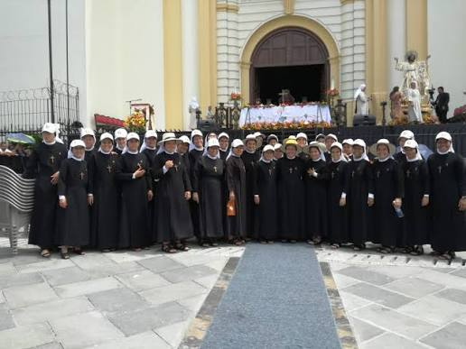
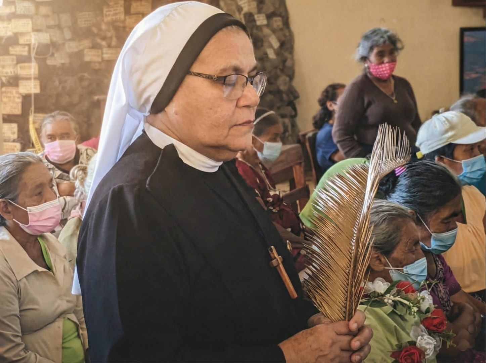
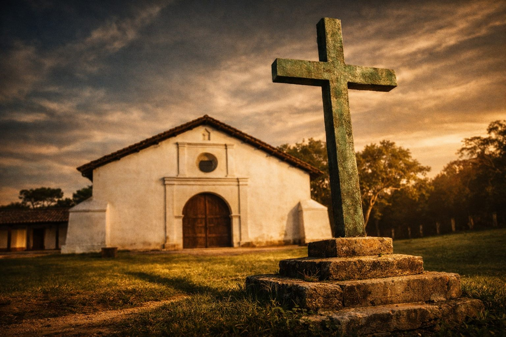
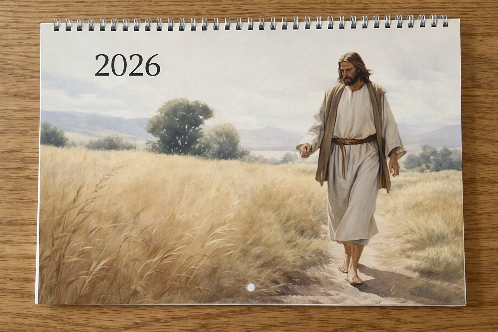

Historia y misión
Una congregación joven con vocación de servicio
Las Siervas de la Misericordia de Dios nacieron en San Salvador y hoy sirven en distintos países, llevando esperanza con obras concretas.
Conocer la congregación

Obras y misión
Nuestra congregación y nuestro medio en El Salvador
Desde parroquias y escuelas hasta proyectos de misericordia, esta obra se sostiene con comunidad, servicio y verdad.
Ver cobertura localÚltimos artículos
Lecturas recientes de SMD
Vaticano
Agenda del Papa para la semana
Audiencias y encuentros pastorales con comunidades de distintos países.

Iglesia en El Salvador
Parroquias organizan jornadas de servicio
La pastoral social refuerza comedores y acompañamiento comunitario.
Mundo
Cáritas lanza campaña global contra el hambre
Colecta internacional para responder a la emergencia humanitaria.

Liturgia
Agenda litúrgica de la semana
Guía práctica para parroquias, coros y agentes pastorales.
Opinión
Fratelli tutti: tres años después
Tres claves para aterrizar su llamado a la fraternidad hoy.
Reportajes
Agua y territorio: defensores en primera línea
Una historia de fe, dignidad y cuidado de la casa común.
Galería